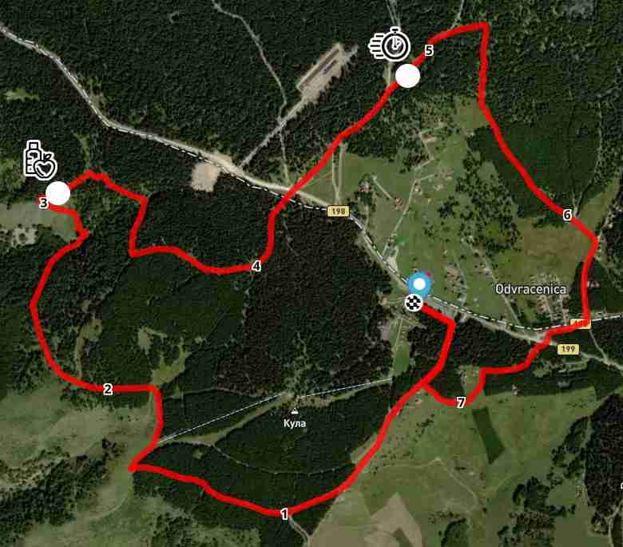

Mala staza - 10km
Doživite lepotu Golije kroz jedinstvenu i izazovnu trail trku.
Pregled staze
Trasa male staze prostire se u ukupnoj dužini od 7 kilometara, sa startom i ciljem na Odvraćenici. Staza vodi kroz raznovrsne terene - guste šume, prostrane livade i kamenite puteve - pružajući nezaboravne poglede na planinski masiv Golije.
Glavne karakteristike:
- Dužina: 7.5 kilometara
- Ukupni uspon: 230 metara
- Start/Cilj: Odvraćenica
- Maksimalna nadmorska visina: 1645 metara
Mapa staze
Kontrolne tačke
Na stazi se nalaze 2 kontrolne tačke od kojih će na jednoj moći da se osveže i okrepe. Te tačke su:
- Kontrolna tačka 1: 3 km - okrepa i medicinska pomoć.
- Kontrolna tačka 2: 5 km - beleženje prolaska trkača.
Visinski profil
Visinski profil male staze prikazuje promene nadmorske visine koje će takmičari savladati. Staza pretežno sadrži blage uspone i spusteve što je čini pogodnom i za manje iskusne trkače.

Pravila staze
- Svi učesnici moraju nositi svoj startni broj tokom cele trke.
- Bacanje otpada na stazi je strogo zabranjeno.
- Takmičari su dužni da prate obeleženu stazu u svakom trenutku.
- Bilo kakva spoljašnja pomoć nije dozvoljena.
- Učesnici moraju proći kroz sve kontrolne tačke.
Mere bezbednosti
Bezbednost učesnika je naš najveći prioritet. Biće obezbeđene sledeće mere:
- Spasioci Gorske službe spasavanja Srbije će biti prisutni na trci.
- Prilagodite potrebnu opremu i odeću vremenskim uslovima koji se mogu menjati u toku trke.
- Učesnici u trci učestvuju na sopstvenu odgovornost.